| country | continent | year | lifeExp | pop | gdpPercap |
|---|---|---|---|---|---|
| Afghanistan | Asia | 1952 | 29 | 8425333 | 779 |
| Afghanistan | Asia | 1957 | 30 | 9240934 | 821 |
| Afghanistan | Asia | 1962 | 32 | 10267083 | 853 |
| Afghanistan | Asia | 1967 | 34 | 11537966 | 836 |
| Afghanistan | Asia | 1972 | 36 | 13079460 | 740 |
Data Visualization I & II
POL 051 - Summer Session 1 2026
Haley Daarstad
Why visualize data?
Data carries weight in our society
Visualizing data is an effective way to convey information, convince, argue
Visualization can be used to tell The Truth™️ (or not)
Dataviz to inform
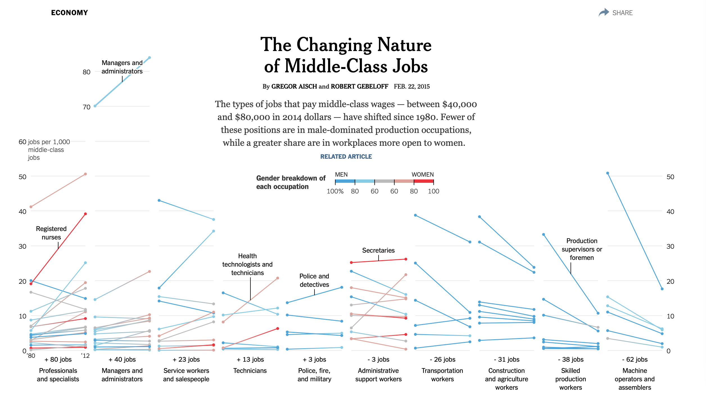
Dataviz to mislead
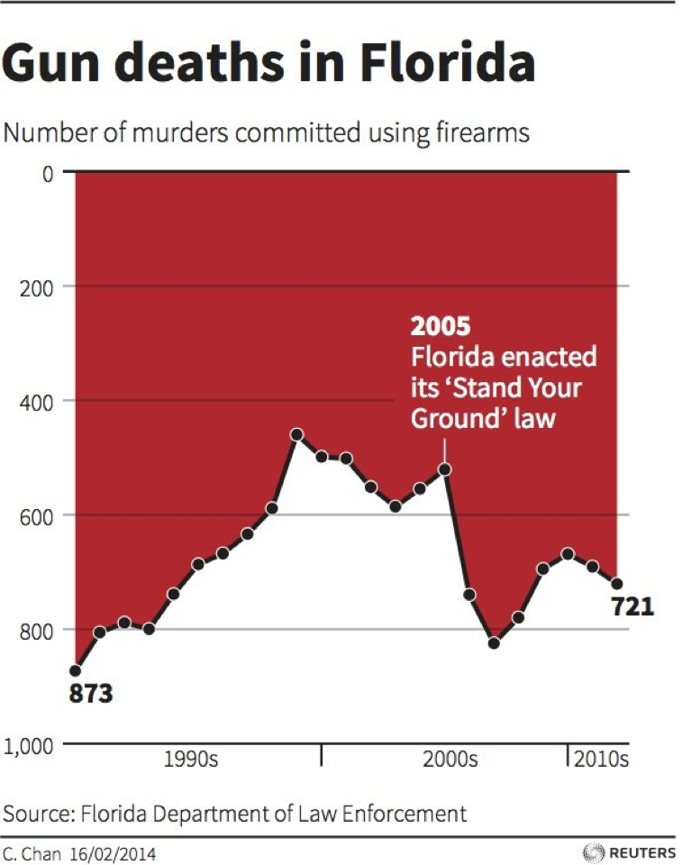
Inform? or mislead?
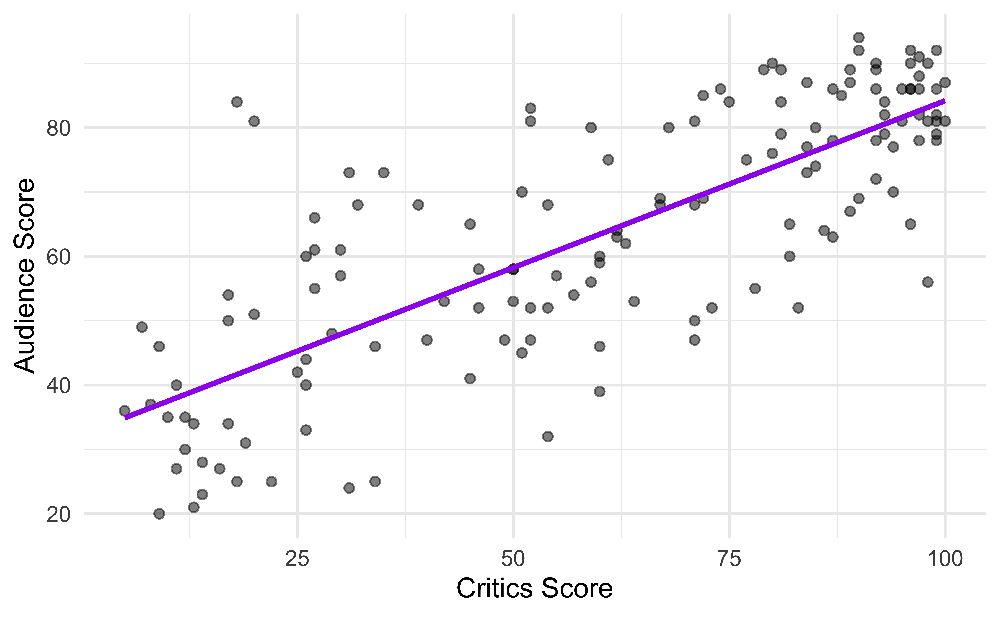
Making graphs in R
The Gapminder dataset
Rows are observations
| country | continent | year | lifeExp | pop | gdpPercap |
|---|---|---|---|---|---|
| Afghanistan | Asia | 1952 | 29 | 8425333 | 779 |
| Afghanistan | Asia | 1957 | 30 | 9240934 | 821 |
| Afghanistan | Asia | 1962 | 32 | 10267083 | 853 |
| Afghanistan | Asia | 1967 | 34 | 11537966 | 836 |
| Afghanistan | Asia | 1972 | 36 | 13079460 | 740 |
In a dataset, rows are observations
The data we observe for Afghanistan in the year 1952
Rows are observations
| id | age | degree | race | sex |
|---|---|---|---|---|
| 1 | 47 | Bachelor | White | Male |
| 2 | 61 | High School | White | Male |
| 3 | 72 | Bachelor | White | Male |
| 4 | 43 | High School | White | Female |
| 5 | 55 | Graduate | White | Female |
In survey data, an observation is typically a person who took the survey (a respondent)
Columns are variables
| country | continent | year | lifeExp | pop | gdpPercap |
|---|---|---|---|---|---|
| Afghanistan | Asia | 1952 | 29 | 8425333 | 779 |
| Afghanistan | Asia | 1957 | 30 | 9240934 | 821 |
| Afghanistan | Asia | 1962 | 32 | 10267083 | 853 |
| Afghanistan | Asia | 1967 | 34 | 11537966 | 836 |
| Afghanistan | Asia | 1972 | 36 | 13079460 | 740 |
In a dataset, columns are variables
Life expectancy and GDP per capita are some of the variables in our data
The final graph
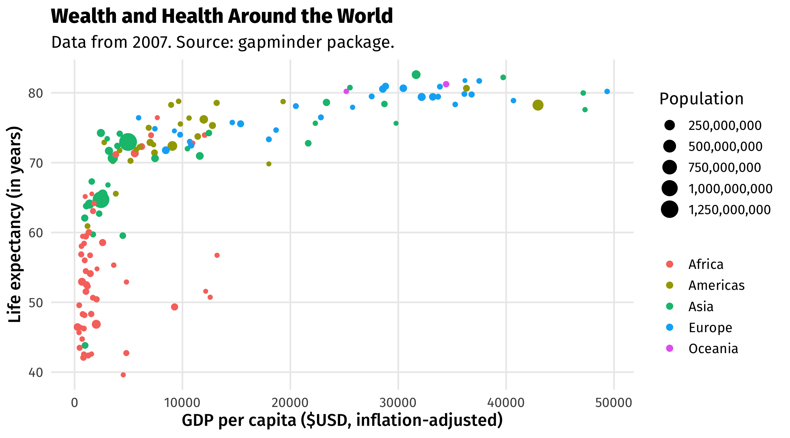
There are four variables on this graph. What are they?
The grammar of graphics
Graphs have an internal logic, or grammar that connects data to visuals
Data = variables in a dataset
Aesthetic = visual property of a graph (position, shape, color, etc.)
Geometry = representation of an aesthetic (point, line, text, etc.)
Mapping data to aesthetics
| Data | Aesthetic | Geometry |
|---|---|---|
| GDP per capita | Position(x-axis) | Point |
| Life expectancy | Position (y-axis) | Point |
| Continent | Color | Point |
| Population | Size | Point |
Take the data,
map it onto an aesthetic,
and visualize it with a geometry
In R
| Data | aes() | geom_ |
|---|---|---|
| gdpPercap | x | geom_point() |
| lifeExp | y | geom_point() |
| continent | color | geom_point() |
| pop | size | geom_point() |
Use the variable names exactly as they appear in the data, map them onto the exact function names in R
ggplot(): our first function 😢

don’t fret; You will not memorize these as they appear on screen
ggplot: specify the data
Use aes() to map variables to aesthetics
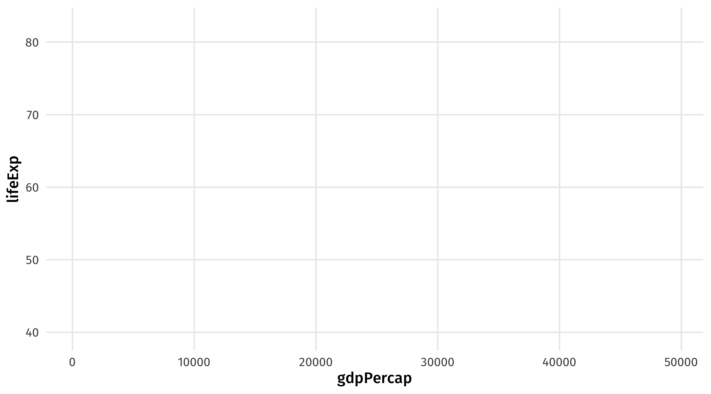
add geometries and layers using +
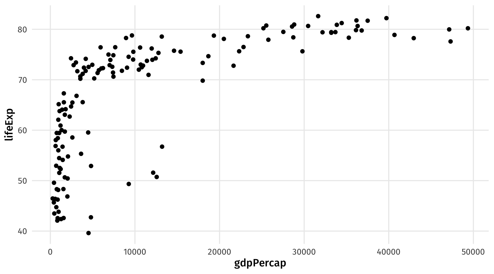
mapping population to size in aes()
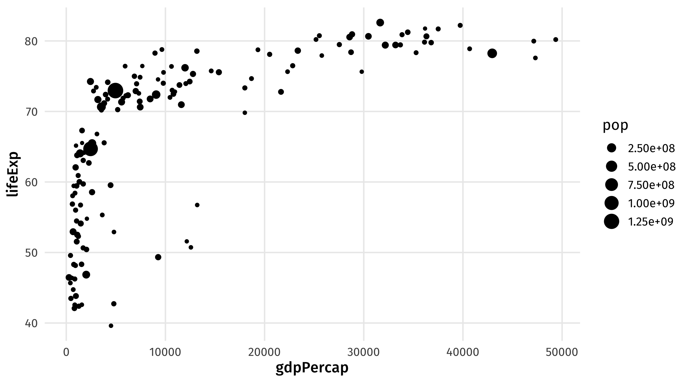
mapping continent to color in aes()
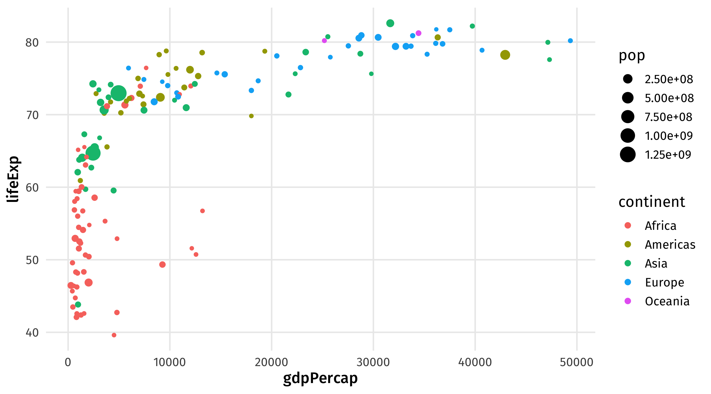
Other layers: add the missing titles with labs()
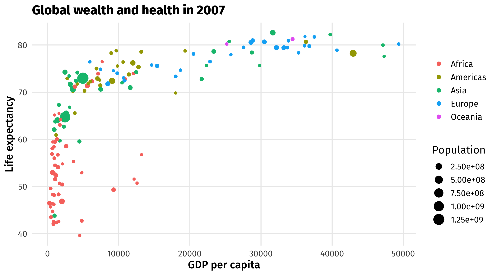
Notice that text is placed within quotation marks!
Other layers: add a theme
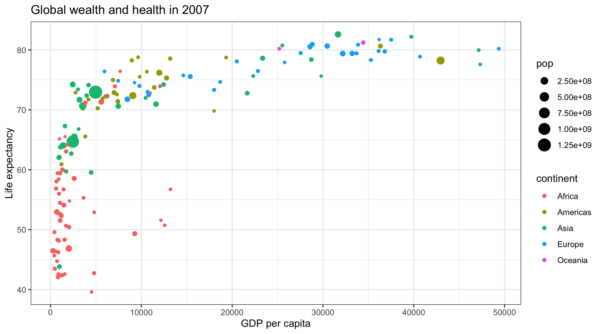
There are many more themes, here are a few
The final formula
Tell
ggplot()the data we want to plotMap all variables onto aesthetics within
aes()Add layers like
geom_point()andtheme_bw()using+
What’s that country way out on the bottom right?
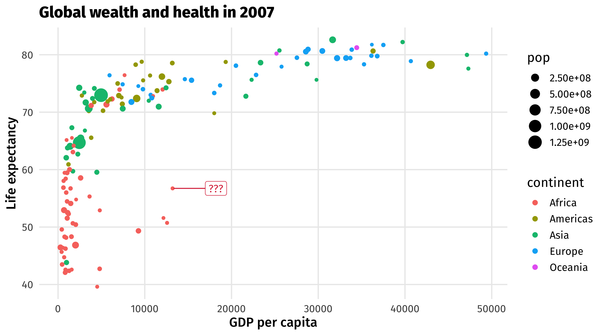
🚨 Your turn: try labeling the points 🚨
Add labels to each point by mapping country names onto the
labelaesthetic withinaes()Add
geom_textlayer to your plot to plot the names
The basic plot

Map country names to label aesthetic

Plot the labels
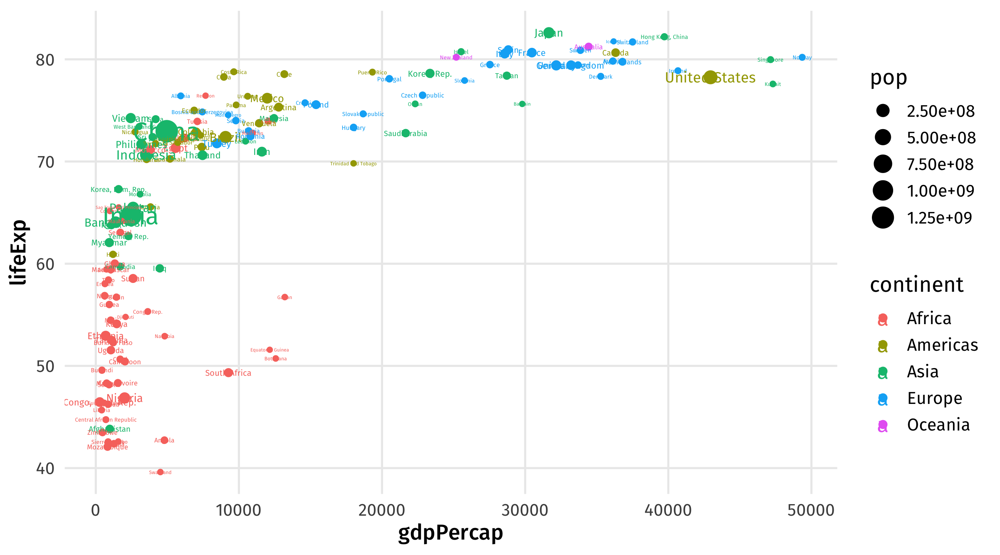
What did we do?
| Data | Aesthetic | Geometry |
|---|---|---|
| gdpPercap | x | geom_point() |
| lifeExp | y | geom_point() |
| continent | color | geom_point() |
| pop | size | geom_point() |
| country | label | geom_text() |
Take your data, map it onto an aesthetic, represent with a geometry
🇺🇸 The presidents 🇺🇸
🚨 Your turn 🚨
Make a plot of presidential election results using the
elections_historicdataset% of popular vote (x-axis,
popular_pct) and % of electoral college vote (y-axis,ec_pct)map the winner’s party to the
coloraesthetic, whether or not president served two terms toshape, and add labels to each point (usewinner_label)
US Presidents
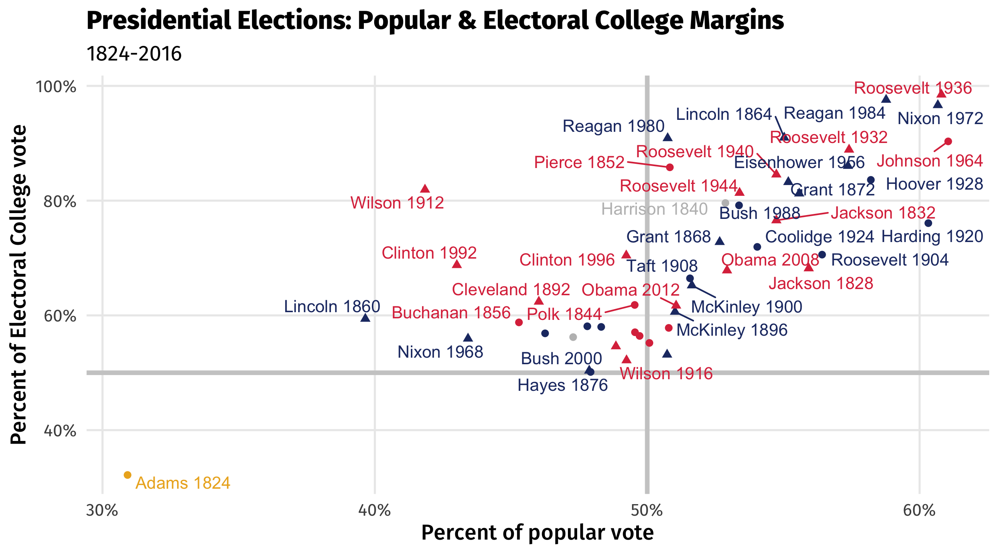
What’s going on here?
What did we do?
| Data | Aesthetic | Geometry |
|---|---|---|
| popular_pct | x | geom_point() |
| ec_pct | y | geom_point() |
| win_party | color | geom_point() |
| two_term | shape | geom_point() |
| winner_label | label | geom_text() |
Take your data, map it onto an aesthetic, represent with a geometry
A graph for every season
There are many graphs out there
Each one works best in a specific context
Each one combines different aesthetics and geometries
Key plotting questions
What am I trying to show?
- (a distribution, a relationship, a comparison, an amount)
What kind of variables do I have?
- (continuous, discrete, something in between)
What aesthetics and geometries do I need for this plot?
- (x-axis, y-axis, color, size, shape, etc.)
What kind of variable do I have?
| id | age | degree | race | num_kids |
|---|---|---|---|---|
| 1 | 47 | Bachelor | White | 3 |
| 2 | 61 | High School | White | 0 |
| 3 | 72 | Bachelor | White | 2 |
| 4 | 43 | High School | White | 4 |
| 5 | 55 | Graduate | White | 2 |
- Continuous variables take on lots of values (GDP, population, income, age, etc.)
What kind of variable do I have?
| id | age | degree | race | num_kids |
|---|---|---|---|---|
| 1 | 47 | Bachelor | White | 3 |
| 2 | 61 | High School | White | 0 |
| 3 | 72 | Bachelor | White | 2 |
| 4 | 43 | High School | White | 4 |
| 5 | 55 | Graduate | White | 2 |
- Discrete or categorical variables takes on a few values, often “qualitative” (yes/no, 1/0, race, etc.)
Graph 1 - The Scatterplot
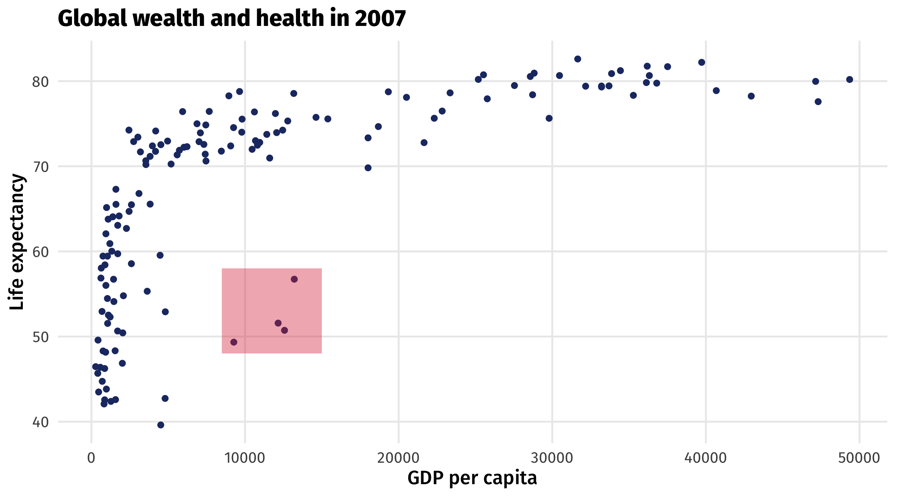
The scatterplot visualizes the relationship between two continuous variables
Shows every point in the data, reveals trends and outliers
The grammar of scatterplots
| gdpPercap | lifeExp |
|---|---|
| 974.58 | 43.83 |
| 5937.03 | 76.42 |
| 6223.37 | 72.30 |
| 4797.23 | 42.73 |
| 12779.38 | 75.32 |
| Data | Aesthetic | Geometry |
|---|---|---|
| gdpPercap | x | geom_point() |
| lifeExp | y | geom_point() |
Scatterplots are for continuous variables
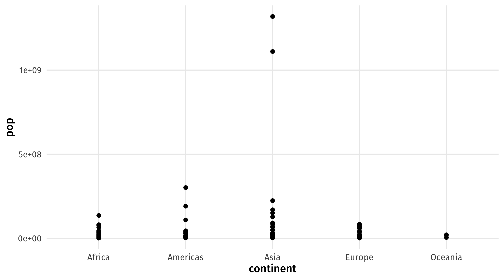
Plot is uninformative because continent is discrete (i.e., a category)
Graph 2: the time series
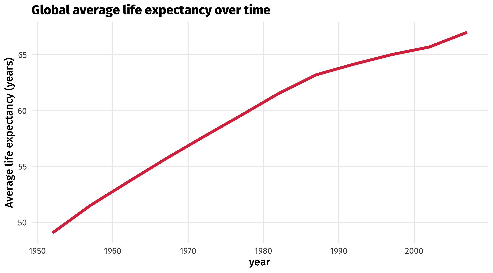
The time series uses a line to show you how a variable (y-axis) moves over time (x-axis)
The grammar of time series
| year | avg_yrs |
|---|---|
| 1952 | 49.06 |
| 1957 | 51.51 |
| 1962 | 53.61 |
| 1967 | 55.68 |
| 1972 | 57.65 |
| Data | Aesthetic | Geometry |
|---|---|---|
| year | x | geom_line() |
| avg_yrs | y | geom_line() |
Notice the new geometry, geom_line()
The time series
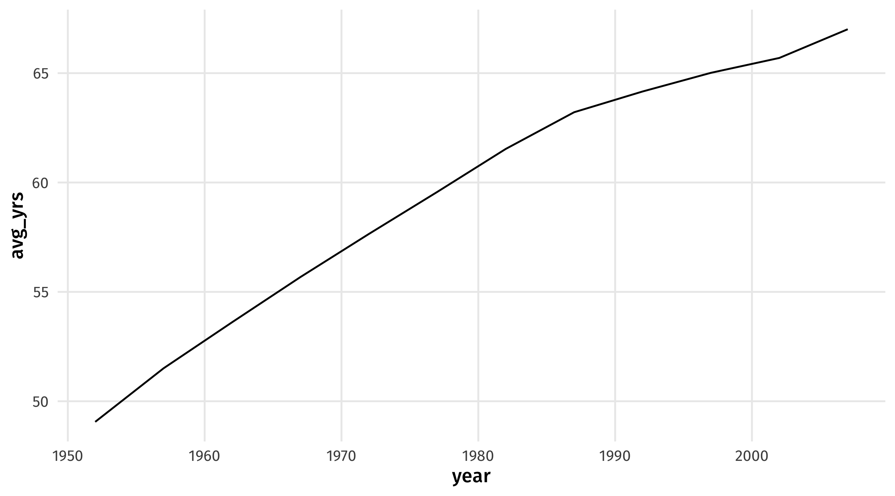
🚨 Your turn: 💸Recession💸 🚨
Look at the
economicsdataset from thetidyversepackageType and run
economicsto see the dataType and run
?economicsto read about the dataMake a time series of unemployment over time
Can you identify the recessions?
💸Recession💸
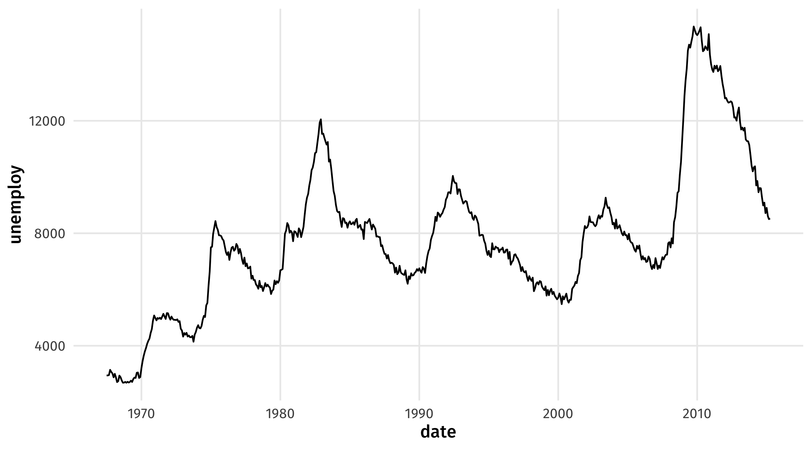
Multiple time series
Sometimes we observe multiple units over time; how can we visualize these?
| country | continent | year | lifeExp | pop | gdpPercap |
|---|---|---|---|---|---|
| Bolivia | Americas | 1987 | 57.251 | 6156369 | 2753.6915 |
| United States | Americas | 1977 | 73.380 | 220239000 | 24072.6321 |
| Ghana | Africa | 1992 | 57.501 | 16278738 | 925.0602 |
| China | Asia | 1997 | 70.426 | 1230075000 | 2289.2341 |
| United States | Americas | 1997 | 76.810 | 272911760 | 35767.4330 |
Start from scratch

Add aesthetics
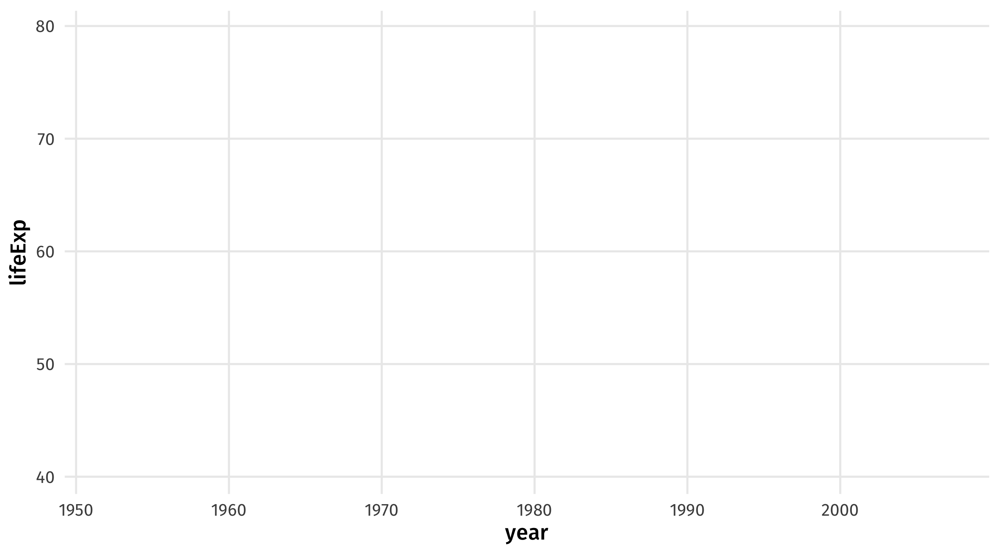
Add geometry: 🤢
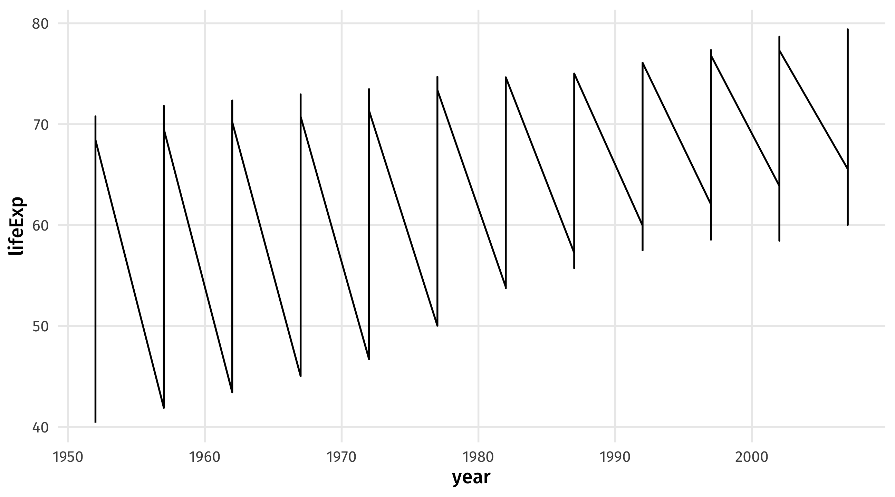
using color to separate lines

Multiple time series
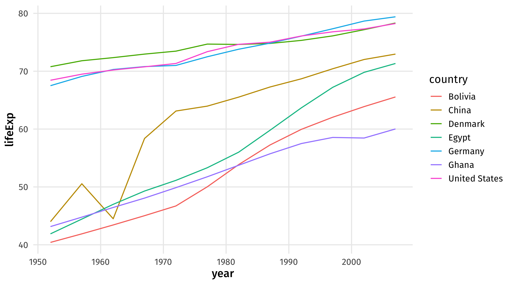
These are useful for comparing trends across units (countries, places, people, etc)
Graph 3: the histogram
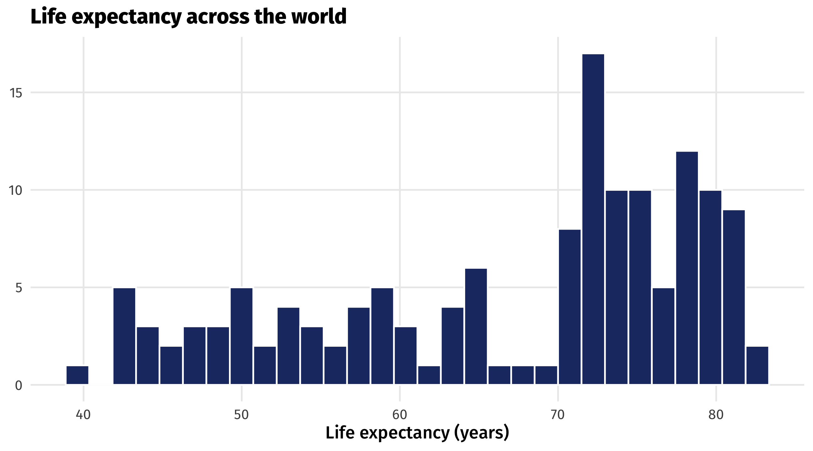
A histogram shows you how a continuous variable is distributed
Interpreting histograms
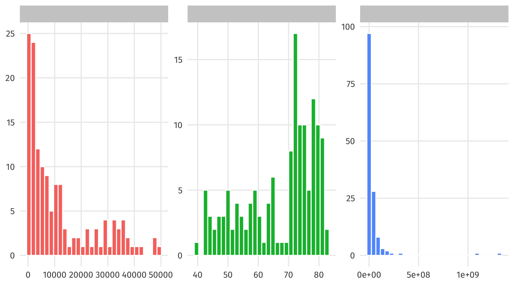
The grammar of histograms
| lifeExp |
|---|
| 43.83 |
| 76.42 |
| 72.30 |
| 42.73 |
| 75.32 |
| Data | Aesthetic | Geometry |
|---|---|---|
| lifeExp | x | geom_histogram() |
Notice the new geometry, geom_histogram(); and that a histogram only uses the x-axis!
The histogram
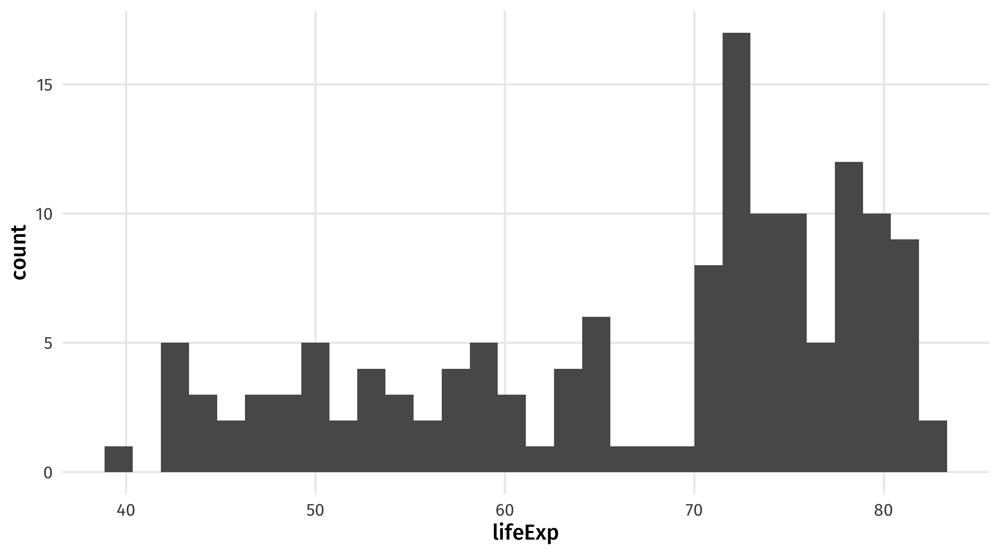
🚨 Your turn: organs 🫁🧠 🚨
In some countries, when you die it is assumed you want to donate your organs
To not donate, you have to opt out
In other countries, when you die it is assumed you do not want to donate your organs
To not donate, you have to opt in
| country | donors | opt |
|---|---|---|
| Finland | 17.1 | NA |
| Denmark | 12.9 | In |
| Austria | 25.9 | Out |
| Austria | 23.9 | Out |
| Italy | 10.1 | In |
🚨 Your turn: organs 🫁🧠 🚨
Using the organdata dataset:
Make a histogram of country’s organ donation rate (
donors)Then set the fill aesthetic to
opt, whether donors have to opt in or opt out of donating. How does the graph change?
organs 🫁🧠
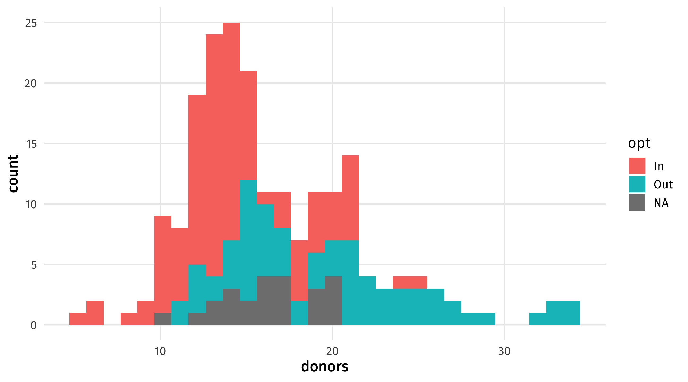
Graph 4: the barplot
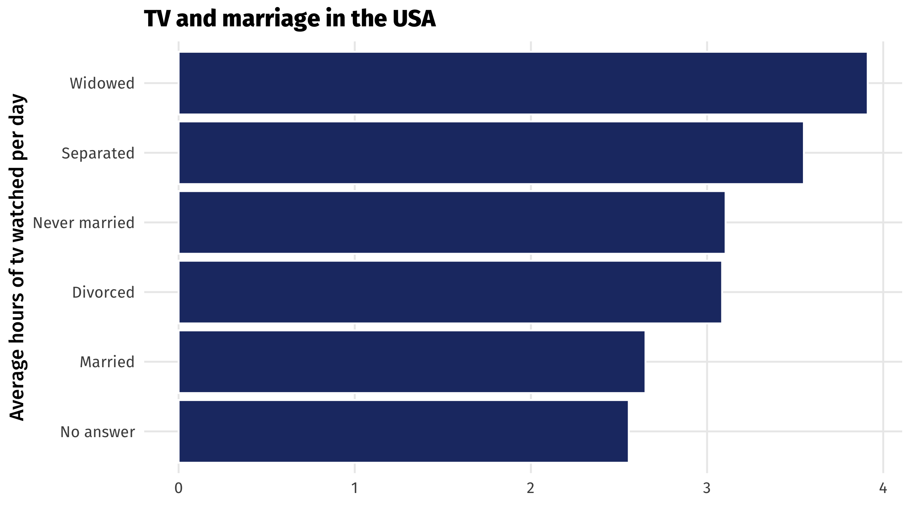
Barplots place a category (place, country, person, etc) on one axis and a quantity (amount, average, median, etc.) on another
Useful for making comparisons, highlighting differences
The grammar of barplots
| marital | tv |
|---|---|
| No answer | 2.56 |
| Never married | 3.11 |
| Separated | 3.55 |
| Divorced | 3.09 |
| Widowed | 3.91 |
| Data | Aesthetic | Geometry |
|---|---|---|
| tv | x | geom_col() |
| marital | y | geom_col() |
Note
You could switch the x and y mapping around, but I think categories look better on the y-axis
The barplot
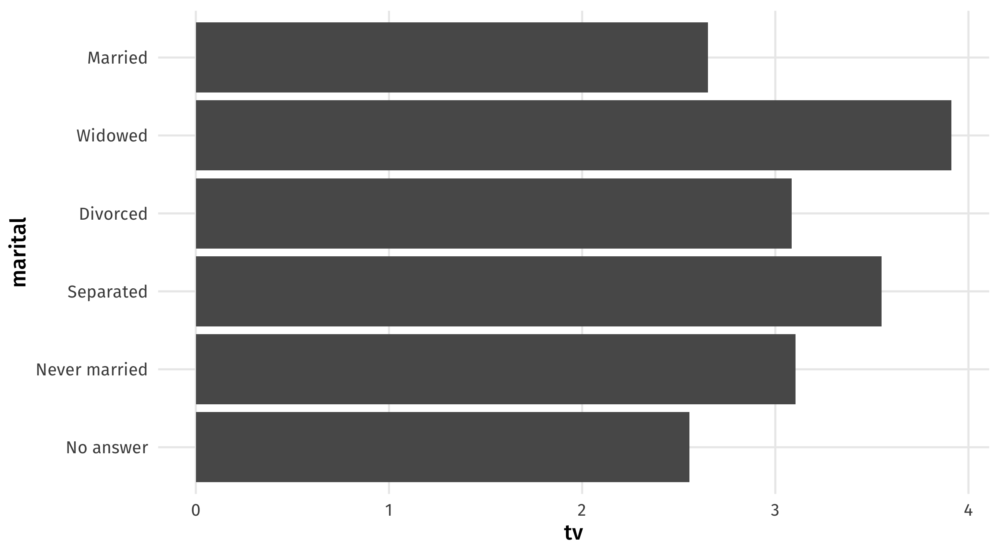
Graph 5: the boxplot

Boxplots compare distributions of continuous variables across groups
Compare distributions: the boxplot
Boxplots contain a lot of info 🥵:
- bold line is the median observation
- box is the middle 50% of observations
- thin lines show you min and max value, except…
- the dots, which are outlier observations
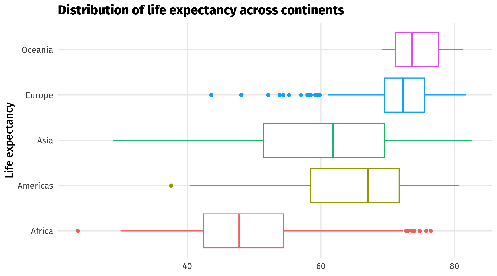
The grammar of boxplots
| continent | lifeExp |
|---|---|
| Asia | 43.83 |
| Europe | 76.42 |
| Africa | 72.30 |
| Africa | 42.73 |
| Americas | 75.32 |
| Data | Aesthetic | Geometry |
|---|---|---|
| contient | y | geom_boxplot() |
| lifeExp | x | geom_boxplot() |
Note
You could switch the x and y mapping around, but I think categories look better on the y-axis
The boxplot
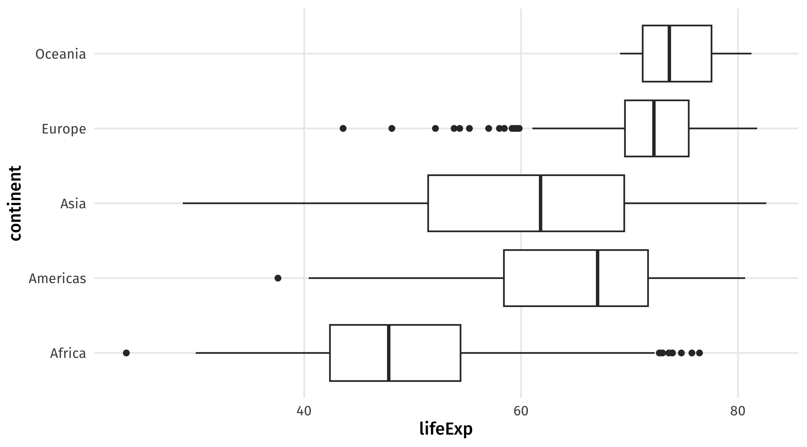
The five(-ish) graphs
| Graph | aes() | geom_ | Purpose |
|---|---|---|---|
| Scatterplot | x = cause, y = effect | point() | Relationships |
| Time series | x = date, y = variable | line() | Trends |
| Histogram | x = cont. variable | histogram() | Distributions |
| Barplot | y = category, x = quantity | col() | Compare amounts |
| Boxplot | y = category, x = cont. variable | boxplot() | Compare distributions |
Know how and when to use which!
Making better graphs
We’ve barely scratched the surface; there’s many more aesthetics, geometries, and layers in
ggplot()Here are some of my favorite ones
And some ideas for making graphs better
Showing “movement” using panels
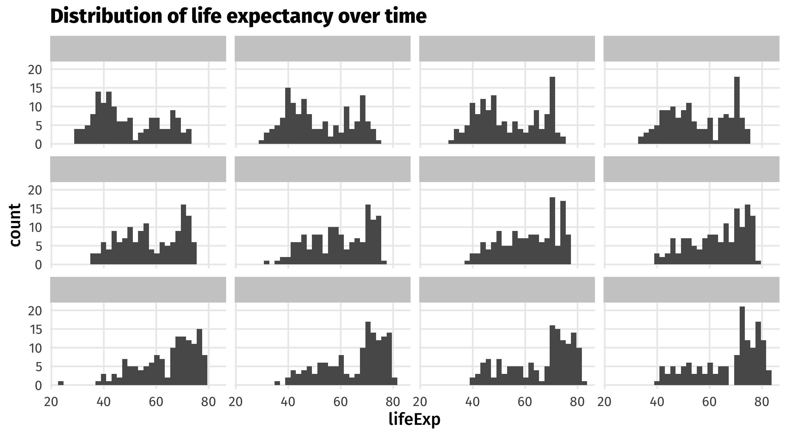
We can use panels to show movement of a variable across time, space, etc.
Using facet_wrap
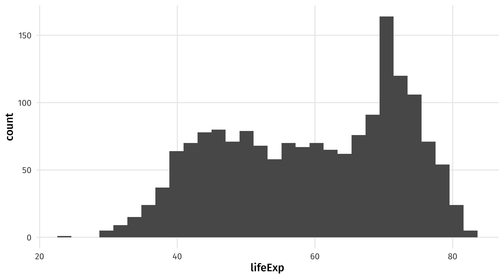
Using facet_wrap
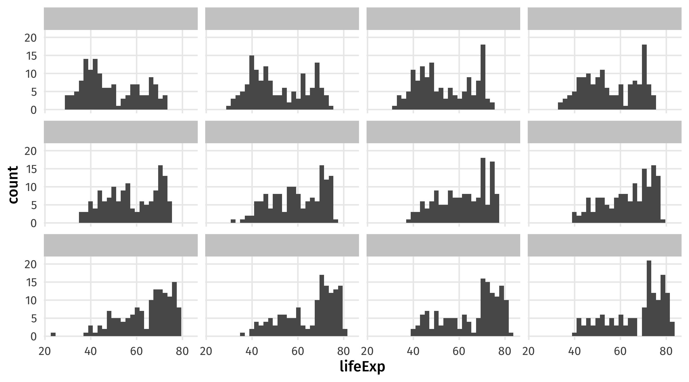
Note
Make sure the facetting variable is wrapped in vars()!
Make aesthetics static
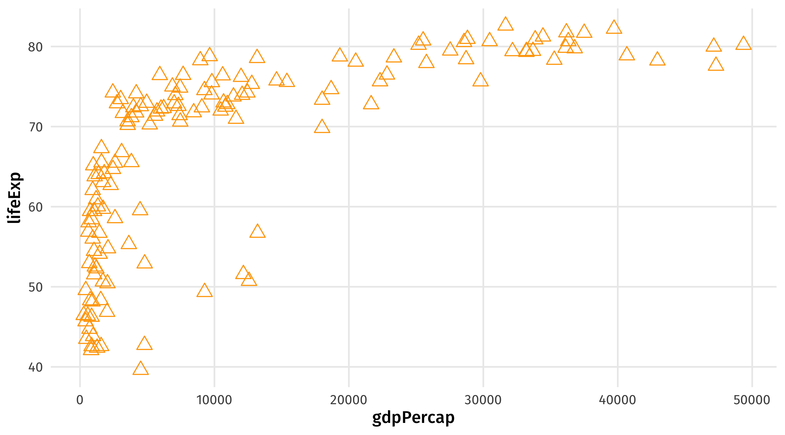
Take your aesthetics out of aes() and into geom() to make them static
Ridge plots (better than grouped histograms)
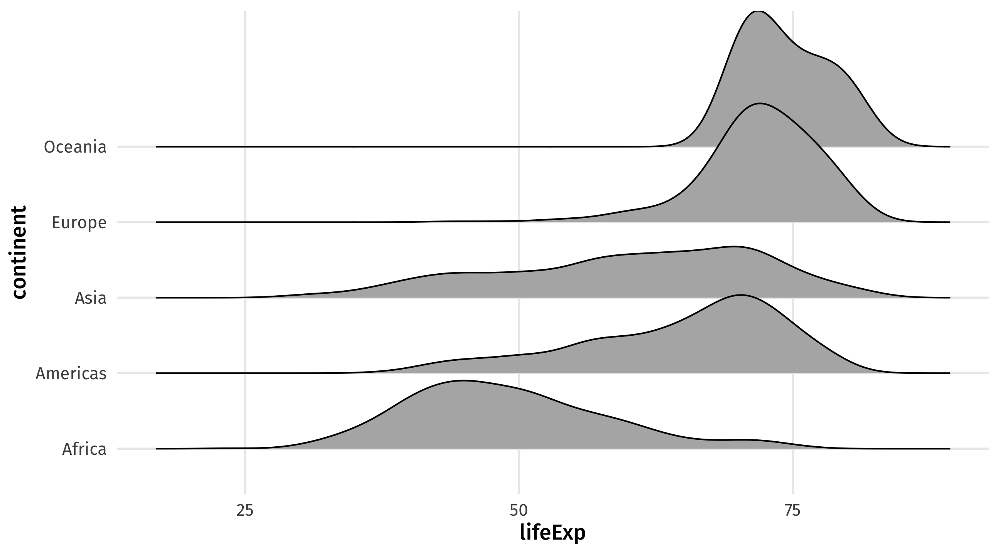
Ease visual comparison + kinda looks like the Joy Division album
Beeswarm plots (alternative boxplots)
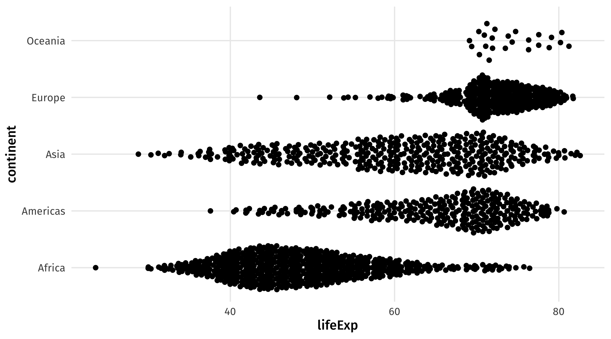
Beeswarm plots tell us something boxplots don’t: the number observations by group; used recently by the NYT
Use different color and fill scales
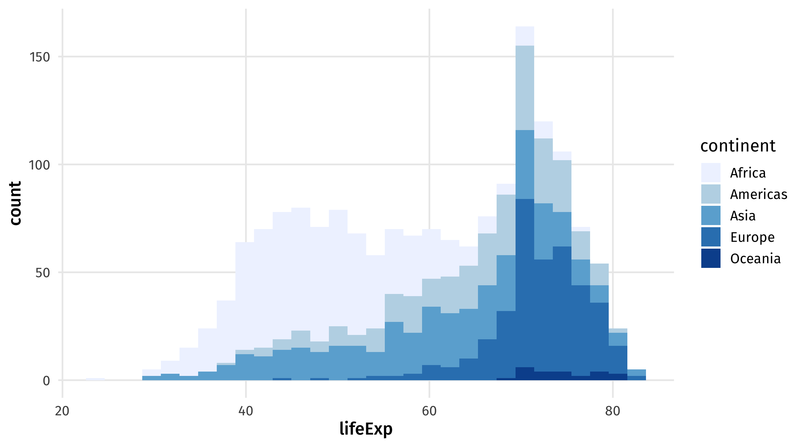
scale_fill_brewer() for fill, scale_color_brewer for color
My favorite scale (right now)
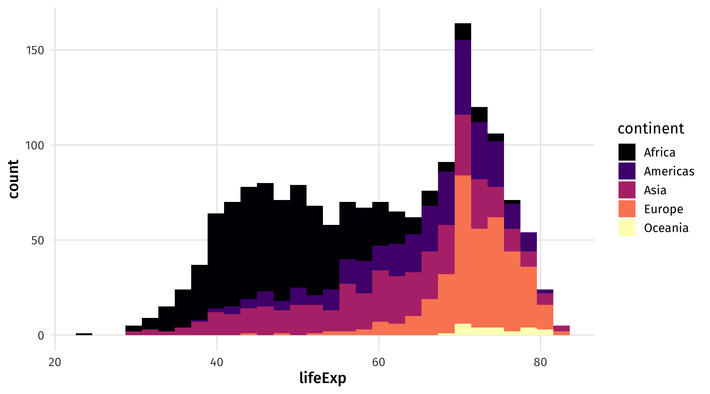
scale_fill_viridis_d for discrete variables, scale_fill_viridis_d for continuous
Many other themes
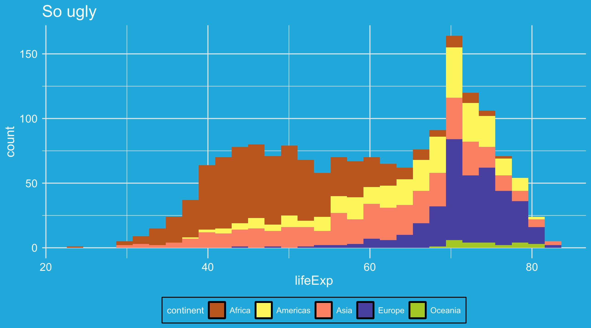
theme_spongeBob() from tvthemes package, many more online